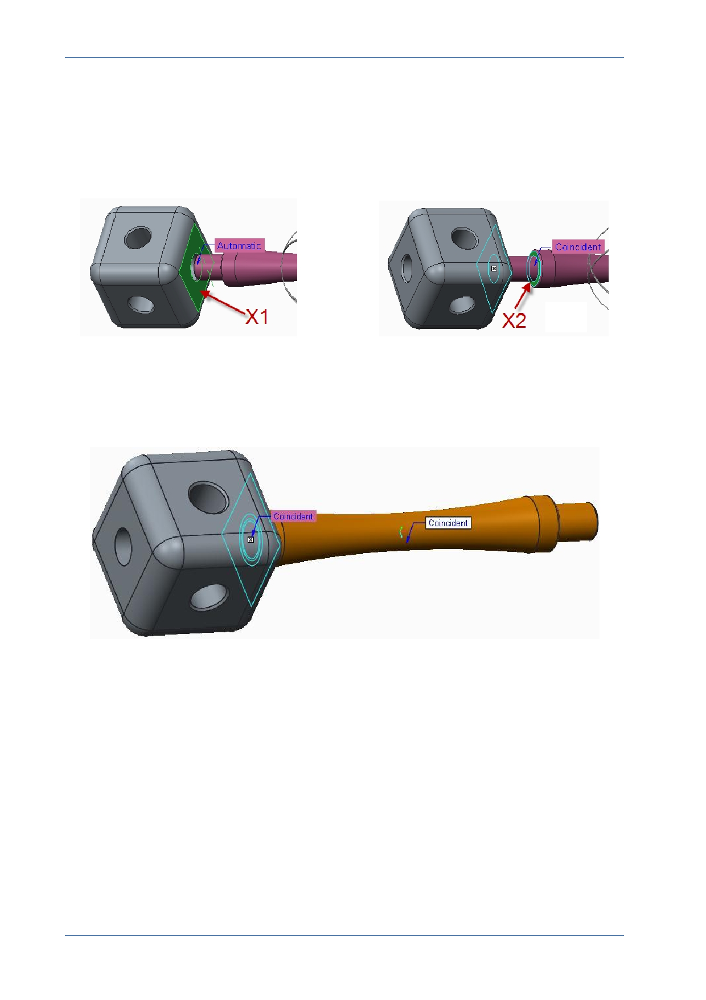

PTC Academic Program
5. Adding a second assembly constraint:
Click to select the flat surface of the cube that is closest to and facing the strut X1 .
Press and hold the middle-mouse button and drag to spin the model until you can
see the flat surface shown as X2 on the strut.
Click to select the flat surface shown as X2 .
Creo Parametric recognizes two flat surfaces facing each other and applies a
Coincident constraint. The two selected surface are now touching each other.
The strut has changed to a yellow-orange color indicating that its position is fully
constrained in the assembly.
© 2012 PTC
Creo Parametric 2.0 Primer
Page 72